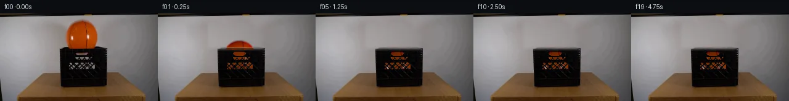

![首帧]()

Round 00
2026-11-05T04:05:05.702705+00:00像素候选变化代码 +217/−0inspection 更新
pixels cef31eb15a391ebd · code 7b12d86526ad379c
查看本轮 generate.py 真实 diff
--- previous/generate.py
+++ current/generate.py
@@ -0,0 +1,217 @@
+"""
+PixelWorld case_0014 — orange basketball released over a black plastic crate.
+
+Local pixel operations only:
+ * static background plate (polynomial wall-lighting fit + inpaint, lip clone),
+ * RGBA ball sprite unmixed from frame 0 against that plate,
+ * analytic gravity / restitution simulation (1 ms substeps),
+ * shutter-integrated compositing with crate-front opening occlusion.
+Frame 00 is a verbatim copy of first_frame.png.
+"""
+from pathlib import Path
+import numpy as np
+from PIL import Image, ImageDraw, ImageFilter
+import artifact_io
+
+CASE = Path(__file__).parent
+TMP = CASE / '.tmp'
+TMP.mkdir(exist_ok=True)
+
+FIRST = np.array(Image.open(CASE / 'first_frame.png').convert('RGB'))
+H, W = FIRST.shape[:2]
+
+# ---------------------------------------------------------------- geometry
+CX, CY0, R = 132.0, 40.0, 26.0 # ball centre at release / geometric radius
+RIM_Y = 56 # front-lip top row
+FLOOR_Y = 114 # crate inner floor (bottom contact)
+Y_REST = FLOOR_Y - R # 88
+G = 1900.0 # px/s^2 (64 px crate ~ 0.33 m)
+E = 0.68 # restitution, inflatable ball / plastic
+FPS, N = 4, 20
+SHUTTER = 0.09 # s
+NSH = 9 # shutter samples
+
+# ------------------------------------------------------------------ plate
+def build_plate():
+ img = FIRST.astype(np.float64)
+ Rr, Gg, Bb = img[..., 0], img[..., 1], img[..., 2]
+ yy, xx = np.mgrid[0:H, 0:W]
+
+ # clean neutral wall samples from side strips
+ neutral = ((np.abs(Rr - Gg) < 12) & (np.abs(Rr - Bb) < 15) &
+ (Rr > 70) & ((xx <= 92) | (xx >= 178)) &
+ (yy >= 6) & (yy <= 110))
+ ys, xs = np.where(neutral)
+ u = xs / 128.0 - 1.0
+ v = ys / 72.0 - 1.0
+ P = np.stack([np.ones_like(u), u, v, u*u, u*v, v*v,
+ u**3, u*u*v, u*v*v, v**3], axis=1)
+
+ ug = (xx / 128.0 - 1.0).ravel()
+ vg = (yy / 72.0 - 1.0).ravel()
+ Q = np.stack([np.ones_like(ug), ug, vg, ug*ug, ug*vg, vg*vg,
+ ug**3, ug*ug*vg, ug*vg*vg, vg**3], axis=1)
+ model = np.zeros_like(img)
+ for c in range(3):
+ coef, *_ = np.linalg.lstsq(P, img[ys, xs, c], rcond=None)
+ model[..., c] = (Q @ coef).reshape(H, W)
+
+ # mask: ball footprint + soft wall shadow inside ROI above the lip
+ dist = np.hypot(xx - CX, yy - CY0)
+ lum = img @ np.array([0.299, 0.587, 0.114])
+ mlum = model @ np.array([0.299, 0.587, 0.114])
+ roi = (xx >= 82) & (xx <= 180) & (yy >= 6) & (yy <= RIM_Y - 1)
+ mask = roi & ((dist <= 29.5) | (mlum - lum > 7))
+ mimg = Image.fromarray((mask * 255).astype(np.uint8))
+ mimg = mimg.filter(ImageFilter.MaxFilter(5)).filter(ImageFilter.GaussianBlur(2.2))
+ alpha = np.asarray(mimg).astype(np.float64) / 255.0
+ plate = img * (1 - alpha[..., None]) + model * alpha[..., None]
+
+ # complete the occluded front lip rows from neighbouring plastic pixels
+ rng = np.random.default_rng(14)
+ for y in range(RIM_Y, 64):
+ pool = np.concatenate([plate[y, 104:112], plate[y, 156:164]], axis=0)
+ rng.shuffle(pool)
+ tile = np.repeat(pool, (156 - 108) // len(pool) + 2, axis=0)
+ plate[y, 108:156] = tile[:156 - 108]
+ return np.clip(plate, 0, 255)
+
+PLATE = build_plate()
+
+# ------------------------------------------------------------------ sprite
+def build_sprite():
+ img = FIRST.astype(np.float64)
+ yy, xx = np.mgrid[0:H, 0:W]
+ dist = np.hypot(xx - CX, yy - CY0)
+ cover = np.clip((29.0 - dist) / 4.5, 0, 1) # soft geometric edge
+ rmse = np.sqrt(((img - PLATE) ** 2).mean(-1))
… diff truncated; 130 more lines …